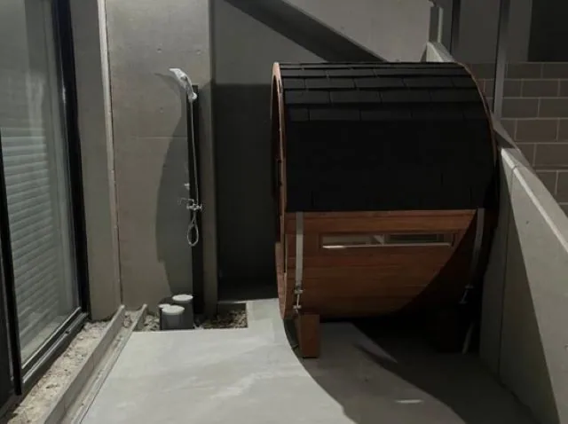
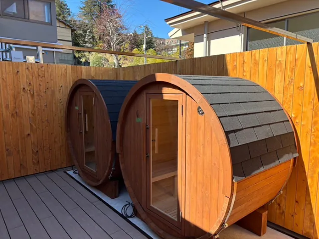

「バレルサウナのサイズ選びに悩んでいる」「設置スペースや利用人数に合ったサイズが知りたい」とお困りではありませんか？
サイズ選びは、サウナの快適性や設置のしやすさに直結する重要なポイントです。
選び方を間違えると、「思ったより狭かった」「置き場所に合わなかった」と、購入後に後悔することも。
この記事では、利用人数や設置環境に合ったサイズの選び方に加え、サイズ別の価格比較や、小型・大型それぞれのメリット・デメリットまで詳しくご紹介します。
本記事は、6次産業化により自社で高品質な国産ひのき材を調達・加工・販売する、Rink SAUNAが解説する情報です。
最後まで読めば、あなたにとってベストなサイズのバレルサウナが見つかり、快適なサウナライフの第一歩を踏み出せるはずです。
失敗しないバレルサウナのサイズの選び方

バレルサウナのサイズ選びで失敗しないためには、「利用人数」と「設置スペース」の両方をしっかり考慮することが大切です。特に設置場所に制限がある場合は、小型サイズを選ぶことで搬入・施工もスムーズになります。
利用人数と設置スペースに合わせたバレルサウナの選び方
利用人数に合わせたバレルサウナのサイズ選びについて解説します。利用人数ごとのおすすめサイズを以下にまとめました。
| 利用人数 | おすすめのサイズ |
|---|---|
| 1～2人 | 床面積：2.23平方メートル （直径：1,800mm／高さ：1,880mm／奥行：1,200mm） |
| 2～4人 | 床面積：2.78平方メートル （直径：1,800mm／高さ：1,880mm／奥行：1,500mm） |
| 4人（ゆったり） | 床面積：3.34平方メートル （直径：1,800mm／高さ：1,880mm／奥行：1,800mm） |
| 4～6人 | 床面積：5.16平方メートル （直径：2,050mm／高さ：2,125mm／奥行：2,450mm） |
| 6～8人 | 床面積：5.79平方メートル （直径：2,050mm／高さ：2,125mm／奥行：2,750mm） |
バレルサウナは、設置場所の広さに応じて選ぶことも重要です。以下は設置環境別のおすすめです。
スペースが限られている場合
小型バレルサウナ（直径1.8m前後）がおすすめです。
目安スペース：約2.0m×1.5m
スペースに余裕がある場合
大型バレルサウナ（直径2.05m以上）で、ゆったり快適な利用が可能です。
目安スペース：約2.3m×3.3m
設置スペースと利用人数を考慮したバレルサウナの選び方の例を以下の表に示します。
| 利用人数 | 設置スペース |
|---|---|
| 1～2人 | 2m×1.6m |
| 2～4人 | 2m×2m |
| 4人以上 | 2.3m×3.3m |
バレルサウナのサイズを選ぶ際には、設置場所のスペースだけでなく、利用人数も考慮することが大切です。利用人数と設置スペースに合わせた、適切なサイズのバレルサウナを選ぶことで、快適なサウナ体験を楽しめます。
サイズ別：バレルサウナの価格
バレルサウナの価格は、サイズや材質、付属設備によって大きく変動します。設置場所や利用人数に適したバレルサウナのサイズ選びをするうえで、価格帯を把握しておくことは重要です。
まず、小型のバレルサウナ（1～2人用）は、比較的安価で170万円～220万円程（サウナ本体、屋根材、塗装、熱源、施工、配送込み）から購入できる場合もあります。限られたスペースにも設置しやすいことがメリットです。家族での利用や、一人でサウナを楽しみたいという方に適しています。
次に、中型のバレルサウナ（2～4人用）は、180万円～250万円程（サウナ本体、屋根材、塗装、熱源、施工、配送込み）が相場となります。小型よりもゆったりとしたスペースでサウナを楽しめ、友人や家族と一緒に利用するのに最適です。
大型のバレルサウナになると、価格は200万円～300万円程（サウナ本体、屋根材、塗装、熱源、施工、配送込み）になります。大人数で利用できるため、商業施設や宿泊施設などでの導入に適しています。
バレルサウナのサイズ選びは、設置スペースだけでなく、利用人数や使用頻度も考慮が必要です。小型のバレルサウナでも、設置スペースが狭すぎると圧迫感をおぼえる可能性があるため、注意が必要です。一方で、大型のバレルサウナを設置する場合は、十分なスペースの確保が欠かせません。
最適なバレルサウナを選ぶためには、予算・設置スペース・利用人数を考慮し、業者から見積もりを取得して検討することが大切です。
なお、特に安価なサウナ業者は、納期から1年以上もサウナが届かず音信不通などトラブルが多発していますので、事前に口コミなどを確認することをおすすめします。
小型バレルサウナと大型バレルサウナの比較

バレルサウナのサイズ選びは、設置スペースだけでなく、利用人数も重要な要素です。設置場所や利用人数に適したバレルサウナのサイズ選びを知りたい方のために、小型と大型のバレルサウナの特徴を比較してみましょう。
| 項目 | 小型バレルサウナ | 大型バレルサウナ |
|---|---|---|
| サイズ | 直径1.8m程度 | 直径2m以上 |
| 利用人数 | 1～2人 | 4人以上 |
| 設置スペース | 庭の片隅など、省スペース | ある程度の広さが必要 |
| 特徴 |
|
|
小型バレルサウナは、省スペースで設置できることが大きなメリットです。お庭やバルコニーなど、限られたスペースでも設置できるため、都市部にお住まいの方にもおすすめです。
一方、大型バレルサウナは、大人数で同時にサウナを楽しめます。
家族や友人と一緒に入ったり、サウナパーティーを開いたりすることも可能です。また、内部も広々としているため、ゆったりとくつろげるのも魅力でしょう。ただし、設置にはある程度の広さが必要となるため、設置スペースを事前に確認しておくことが不可欠です。
どちらのサイズを選ぶかは、利用人数や設置スペース、そして予算などを考慮して最適な選び方をしましょう。
設置スペースに合わせた最適なサイズの選び方
設置場所や利用人数に適したバレルサウナのサイズ選びは、快適なサウナ体験を得るうえで必要不可欠です。限られたスペースを最大限に活用するため、適切なサイズを選びましょう。
設置可能なスペースの正確な寸法
まず、設置可能なスペースの正確な寸法を測ることが大切です。バレルサウナ本体のサイズだけでなく、ドアの開閉に必要なスペースや、メンテナンスのための周囲のスペースも考慮に入れる必要があります。小型のバレルサウナでも、意外に設置スペースが必要になる場合があるので注意が必要です。
利用人数
利用人数も大切な要素です。1～2人で利用する場合は小型のバレルサウナで十分ですが、大人数で利用する場合は、大型のバレルサウナを選ぶ必要があります。設置スペースに余裕があれば、将来的な利用人数の増加も見込んで、少し大きめのサイズを選んでおくのもおすすめです。
快適なサウナ体験のためには、設置スペースと利用人数、そしてサウナ室内の過ごし方を考慮して最適なサイズを選びましょう。
バレルサウナのサイズについてお悩みの方はRink SAUNAまで
心地よい空間を演出するバレルサウナを、自宅や施設に取り入れてみませんか。国産ひのきを贅沢に使用したRink SAUNAのバレルサウナは、香り高い木材が生み出す癒しの空間と、高い抗菌性・防虫性・消臭性を兼ね備えています。独自設計により耐久性にも優れ、長く快適にお使いいただくことが可能です。
また、Rink SAUNAは迅速な納品と確実な納期順守を徹底しており、これまでRink SAUNAによる納期遅延は一切ありません。全国配送はもちろん、専門スタッフによる設置サービスもご利用いただけるため、安心して導入できます。
本格的なサウナ体験を手軽に実現するなら、Rink SAUNAのバレルサウナがおすすめです。興味がある方は、まずはお気軽にご連絡ください。